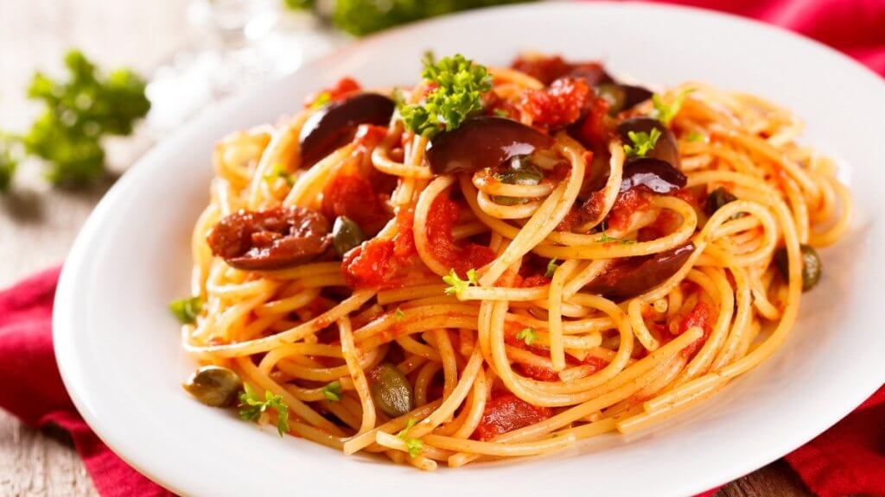

Macarrão

Macarrão com molho de tomate
Macarrão é um tipo de massa alimentícia com o formato de tubos curtos, em que se incluem os penne e os cotovelos.
No entanto, em algumas regiões do Brasil, o termo "macarrão" é usado para se referir a qualquer tipo de massa alimentícia,
desde o espaguete às letras e outras formas usadas em vários cozidos e sopas.
Ingredientes
- 500 gr de espaguete
- 1 unidade de cebola
- 1 colher (chá) de óleo de soja
- 1 caixinha de polpa de tomate
- 60 ml de água
- 1 tablete de caldo de frango
- 1 colher (sobremesa) de açúcar
Passos
- Coloque água em abundância para ferver e cozinhe a massa conforme instruções da embalagem.
- Em outra panela aqueça o óleo e refogue a cebola.
- Junte a polpa, a água, o caldo de galinha e ferva por aproximadamente 5 minutos.
- Acrescente o açúcar para equilibrar a acidez do molho e deixe ferver por mais 1 minuto.
- Depois de cozido, escorra a massa, volte para a panela e cubra com o molho, envolva bem todo o macarrão com o molho, leve ao fogo novamente para aquecer bem.
- Desligue o fogo e tampe a panela, para o macarrão absorver bem o molho.
- Sirva uns dez minutos depois, com bastante parmesão.